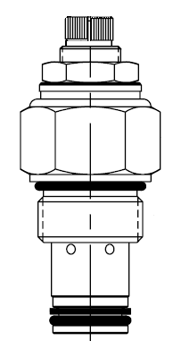
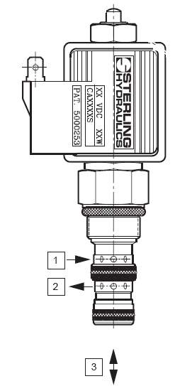
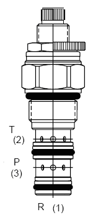
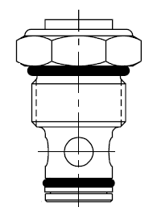
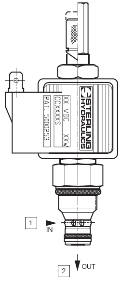
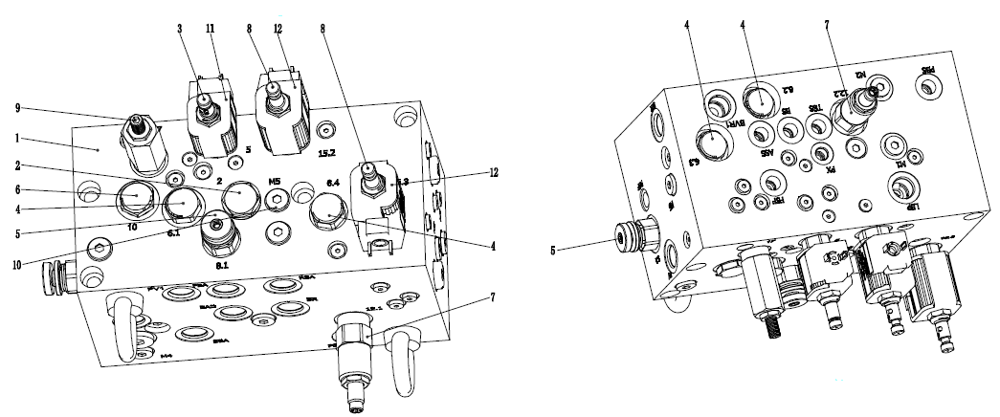
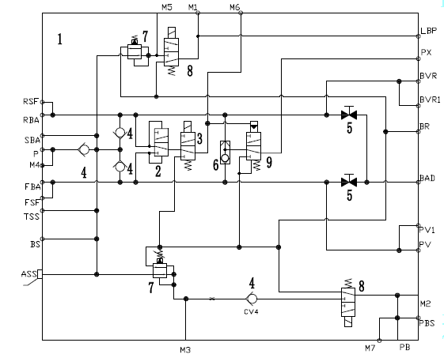

制动阀块. · BRAKE VALUE
Описание
Блок клапанов управления торможением в сборе представляет собой блок клапанов в металлическом корпусе квадратного сечения с рядом вставных клапанов и присоединительных отверстий для шлангов. Он обычно устанавливается в гидравлическом блоке управления.
Управление
Блок клапанов управления торможением в сборе является одной из основных сборочных единиц, включает в себя следующие устройства:
1. Электромагнитный клапан стояночного тормоза
Электромагнитный клапан стояночного торможения — это управляемый катушкой переключающий клапан, который контролирует подачу высокодавленческой гидравлической жидкости к системе стояночного торможения для включения или отключения стояночного торможения.
2. Электромагнитный клапан-переключатель
Электромагнитный клапан-переключатель служит для управления подачей гидравлического масла под высоким давлением в погрузочную тормозную систему, чтобы осуществлять затормаживание или растормаживание задних тормозных суппортов.
Другой электромагнитный клапан-переключатель служит для управления подачей масла к клапану последовательности аварийного тормоза, чтобы приводить систему экстренного торможения в действие.
3. Клапан последовательности
Клапан последовательности устанавливается позади аварийного тормоза, служит для управления потоком масла, действующим на аварийный тормоз, когда давление в пилотной линии ниже 1450 фунтов на квадратный дюйм, масло под высоким маслом проходит через этот клапан и поступает в пилотную линию клапана ножного тормоза, чтобы управлять действием экстренного тормоза.
4. Челночный клапан
Данный челночный клапан устанавливается между обратным клапаном и клапаном последовательности аварийного тормоза, он играет роль в передаче давления от одного с более высоким уровнем давления из переднего и заднего тормозных энергоаккумуляторов в систему экстренного торможения, чтобы обеспечить безопасность в тормозной системе в аварийной ситуации.
5. Редукционный клапан
Тормозная система имеет 2 редукционных клапана, один из них расположен впереди погрузочного тормоза, другой - впереди стояночного тормоза, они играют роль в снижении рабочего давления в тормозной системе до требуемой нормы.
6. Обратный клапан
Обратный клапан предназначен для недопущения изменения направления потока масла в тормозном энергоаккумуляторе, чтобы обеспечить эффективную работу тормозной системы.
7. Сбросное устройство энергоаккумулятора
Оно представляет собой ручной клапан или клапан с ручным приводом в сборе (нагруженный пружинной клапан закрытого типа) или седло с игольчатым клапаном в сборе, оно служит для ручного сброса остаточного давления из тормозного энергоаккумулятора.
8. Фильтрующая сеть
Фильтрующая сетка устанавливается способом фиксации резьбового соединения, чтобы предотвратить попадание крупных загрязняющих веществ в тормозную систему и защитить все клапанные блоки, расположенные позади нее.
9. Переключатель низкого давления в тормозной системе - переключатель с электроприводом в сборе, он предназначен для контроля давления в системе (давление в энергоаккумуляторе) и включения индикатора низкого давления в тормозной системе на приборной панели кабины.
10. Переключатель давления стояночного тормоза - переключатель с электроприводом в сборе, он предназначен для контроля давления в стояночной тормозной системе, ели давление падает ниже заданного значения, необходимого для торможения суппорта стояночного тормоза, то он осуществляет включение индикатора стояночного тормоза на приборной панели кабины.
11. Переключатель давления для автоматического подключения - резервный переключатель с электроприводом в сборе, он предназначен для контроля давления масла, поступающего в тормозную систему, если давление падает ниже заданного значения, необходимого для включения стояночного тормоза, то переключатель на приборной панели кабины осуществляет автоматическое изменение положения катушки и автоматическое приведение в действие задних тормозных механизмов рабочей тормозной системы карьерного самосвала
В блоке клапанов имеется ряд отверстий:
1. Отверстие для заднего тормозного энергоаккумулятора (RBA) - отверстие для отвода давления из заднего тормозного энергоаккумулятора.
2. Отверстие для вспомогательного тормозного энергоаккумулятора (SBA) - отверстие для подвода давления подачи в тормозной энергоаккумулятор.
3. Отверстие для подвода давления (P) - отверстие для подвода давления из блока клапанов управления поворотом в сборе.
4. Отверстие для измерения давления подаваемого масла (TSS) - выход манометра для измерения давления в тормозном энергоаккумуляторе.
5. Отверстие для переднего тормозного энергоаккумулятора (FBA) - отверстие для отвода давления из переднего тормозного энергоаккумулятора.
6. Переднее отверстие для измерения (TSF) - отверстие для установки быстроразъемного штуцера измерения давления в переднем тормозном энергоаккумуляторе.
7. Отверстие под переключатель давления в тормозной системе (BS) - монтажное отверстие под переключатель низкого давления в тормозной системе.
8. Отверстие под переключатель автоматического подключения (AAS) - монтажное отверстие под переключатель давления для автоматического подключения (опция).
9. Отверстие для стояночного тормоза (PB) - отверстие для отвода давления из стояночного тормоза в сборе на колесе с электроприводом.
10. Отверстие под переключатель стояночного тормоза (PBS) - монтажное отверстие под переключатель давления стояночного тормоза.
11. Маслоподводящее отверстие стояночного тормоза (PBS) - выход манометра для измерения давления подаваемого в стояночный тормоз масла.
12. Переднее отверстие для тормозного клапана (PVF) - отверстие для отвода масла из передней секции блока управления тормозами.
14. Маслоподводящее отверстие (PV) клапана ножного тормоза - для подвод масла в отверстие (P2) клапана ножного тормоза.
15. Отверстие для бачка блока управления тормозами (BVT) - отверстие обратного давления блока управления тормозами в сборе.
16. Отверстие для перепуска масла (DR) - отверстие для перепуска масла из блока клапанов в сборе в основной гидробак. Уменьшение противодавления потока перепускаемого масла осуществляется с помощью сужающегося трубопровода в сборе.
17. Перепускное отверстие тормозного энергоаккумулятора (BAD) - отверстие для перепуска масла через ручной дренажный клапан тормозного энергоаккумулятора в блоке клапанов в основной гидробак.
18. Заднее отверстие для блока управления тормозами (BVR) - выходное отверстие задней секции блока управления тормозами.
Напорное гидравлическое масло от блока клапанов управления поворотом в сборе проходит через отверстие (P) и поступает в блок клапанов управления торможением.
Гидравлическое масло под давлением по маслопроводам поступает в 3 тормозных энергоаккумулятора, 3 вставных обратных клапана в блоке клапанов управления торможением, что дает возможность переднему и заднему контурам тормозной системы работать независимо друг от друга. Нормально закрытый вставной дренажный клапан в блоке клапанов позволяет осуществлять сброс давления из переднего или заднего тормозного энергоаккумулятора в процессе ремонта. Сброс давления из вспомогательного энергоаккумулятора или с помощью передней или задней сбросной системы зависит от скорости сброса и давления.
Переключатель низкого давления в тормозной системе предназначен для контроля давления во вспомогательном тормозном энергоаккумуляторе, давление в данном энергоаккумуляторе равно давлению в переднем или заднем тормозном энергоаккумуляторе (независимо от того, в каком из них давление относительно низкое), если давление в данном энергоаккумуляторе меньше 2100 фунтов/кв. дюйм (14480 кПа), то данный переключатель давления осуществляет включение индикатора на приборной панели.
Если карьерный самосвал оснащен переключателем автоматического подключения, то он также способен контролировать давление во вспомогательном тормозном энергоаккумуляторе, если давление меньше 1400 фунтов/кв. дюйм (9655 кПа), то данный переключатель осуществляет отключение питания электромагнитного клапана автоматического подключения, открытие масляного канала и подачу напорного гидравлического масла в систему автоматического подключения тормозов.
Электромагнитный клапан торможения в загруженном состоянии (работает под контролем переключателя, расположенного в кабине) предназначен для управления подачей гидравлического масла в задние тормозные механизмы рабочей тормозной системы через челночный клапан торможения в загруженном состоянии.
Электромагнитный клапан стояночного тормоза предназначен для управления подачей гидравлического масла, необходимого для осуществления торможения и растормаживания суппорта стояночного тормоза, расположенного в колесе с электроприводом. Запорный клапан стояночного тормоза служит для перекрытия потока гидравлического масла в системе, за исключением случае, когда электромагнитный клапан находится в подключенном состоянии, переключатель стояночного тормоза обычно находится в положение «Расторможено».
Когда нужно или необходимо управление тормозным суппортом в сборе, регулятор давления или седло редукционного клапана (при наличии) играет роль в ограничении максимального давления, действующего на данную сборочную единицу.
Более подробная информация о каждой системе содержится в части 5 - «Гидравлическая система».
Ремонт и регулировка
Периодический ремонт блока клапанов должен включать следующие виды работ:
1. Проверить клапан на наличие следов утечек или повреждений. Отремонтировать или заменить по мере необходимости.
2. Проводить испытания ряда функциональных элементов блока клапанов в соответствии с порядком проведения испытаний системы подъема, системы рулевого управления и тормозной системы, указанным в части 5 - «Гидравлическая система».
Снятие
Снятие блока клапанов из карьерного самосвала производится в следующем порядке:
1. Остановить карьерный самосвал в безопасном месте, кроме использования фрикционной системы торможения, еще нужно надежно удерживать его в неподвижном состоянии другим подходящим методом.
2. Полностью сбросить давление в системах в соответствии с порядком проведения функциональных испытаний, указанным в части 5 - «Гидравлическая система», в том числе и всех энергоаккумуляторах системы рулевого управления, тормозной системы.
3. Снять все гидравлические соединители из клапана. Закрывать или закупоривать все открытые отверстия. Приклеить наклейку на каждое открытое отверстие для облегчения общей сборки.
4. Снять болт крепления клапана к монтажному кронштейну.
5. Снять клапан.
ПРЕДУПРЕЖДЕНИЕ
Перед отсоединением или снятием гидравлических трубопроводов следует полностью сбросить давление в системе.Разборка (см. рис. 1, рис. 2 и рис. 3)
Разборка блока клапанов производится в следующем порядке:
ПРИМЕЧАНИЕ: Перед снятием или при снятии различных деталей в процессе разборки и ремонта рекомендуется тщательно отметить специальные способы установки и расположение деталей для обеспечения правильной повторной установки.
1. Снять золотник электромагнитного клапана торможения в загруженном состоянии в сборе.
2. Снять золотники обратных клапанов в сборе.
3. Снять золотник дроссельного клапана или кнопочного ручного дренажного клапана в сборе.
4. Снять золотник запорного клапана стояночного тормоза с седлом в сборе.
5. Снять электромагнитный клапан стояночного тормоза в сборе.
6. Снять золотник редукционного клапана стояночного тормоза с клапанным седлом в сборе.
7. Снять каждую пробку с O-образным кольцом, тщательно отметить их расположение, чтобы облегчить повторную установку.
8. Снять золотник пробкового крана или электромагнитного клапана автоматического подключения (при наличии).
9. Снять переключатель низкого давления в тормозной системе, переключатель давления стояночного тормоза (не указанный на рисунке) и другие соответствующие элементы.
Проверка и ремонт
Осмотр и ремонт деталей блока клапанов производятся в следующем порядке:
1. Проверить все О-образные кольца, входящие в состав комплект уплотнений, затем снять и заменить их новыми. Выявить причины повреждений уплотнительных колец, поскольку это свидетельствует о наличие потенциальных проблем с другими частями. Рекомендуется заменить все О-образные кольца на новые при каждом снятии, чтобы обеспечить надлежащую герметичность и работоспособность клапана.
2. Тщательно очистить все детали чистым растворителем и высушить сжатым воздухом. Не допускается использование тряпки или растворителя, который может оставлять следы.
3. Удалить заусенцы и значительную шероховатость на поверхностях. Повторно очищать по мере необходимости.
4. Проверить блок клапанов управления торможения (1) и все соответствующие компоненты на наличие следов износа или повреждений. Следует обращать особое внимание на отверстия клапанов, сопрягаемые поверхности и резьбовые части. В случае обнаружения серьезных проблем, следует заменить сборочную единицу целиком.
5. Осторожно присоединить провод питания постоянного тока 24В и заземляющий проводник к соответствующим выводам катушки, проводить функциональные испытания каждого электромагнитного клапана. Отремонтировать или заменить по мере необходимости. Затянуть новую катушку до достижения момента 4-6 дюйм-фунтов (5-8 Н.м).
ПРИМЕЧАНИЕ: Более подробная информация об электромагнитном клапане с двойной катушкой стояночного тормоза приведена в части 5 данной инструкции - «Гидравлическая система».
Сборка (см. рис. 1, рис. 2, рис. 3)
Сборка блока клапанов производится в следующем порядке:
ПРИМЕЧАНИЕ: Если электромагнитная катушка была снята в процессе снятия, то затянуть новую катушку до достижения момента 4-6 дюйм-фунтов (5-8 Н.м).
1. Проверить все детали, убедиться в надлежащей чистоте и отсутствии дефектов.
2. Установить О-образные кольца и упорные кольца на все детали, указанные на соответствующих рисунках (см. рис. от 4 до 7).
3. Смазывать все О-образные кольца, отверстия и резьбу блока клапанов чистым гидравлическим маслом, которое совместимо с используемым маслом в гидравлической системе карьерного самосвала.
4. Установить каждую пробку с О-образным кольцом. Затянуть в соответствии с порядком, указанным в части 10 - «Дополнения».
5. Установить золотник редукционного клапана стояночного тормоза в сборе, как показано на рис. 7, затянуть его до достижения момента 20 дюйм-фунтов (27 Н.м).
6. Установить вставную пробку или золотник электромагнитного клапана автоматического подключения в сборе (при наличии). Затянуть их до достижения момента 20 дюйм-фунтов (27 Н.м).
7. Установить золотники обратных клапанов в сборе. Затянуть их до достижения момента 33 дюйм-фунтов (33 Н.м).
8. Установить золотник запорного клапана стояночного тормоза в сборе. Затянуть его до достижения момента 20 дюйм-фунтов (27 Н.м).
9. Установить игольчатый клапан или золотник кнопочного ручного дренажного клапана в сборе. Затянуть их до достижения момента 20 дюйм-фунтов (27 Н.м).
10. Установить золотник электромагнитного клапана торможения в загруженном состоянии в сборе. Затянуть его до достижения момента 25 дюйм-фунтов (33 Н.м).
11. Установить электромагнитный клапан стояночного тормоза в сборе. Затянуть его до достижения момента 20 дюйм-фунтов (27 Н.м).
12. Установить переключатель низкого давления в тормозной системе, переключатель давления стояночного тормоза (не указанный на рисунке) и другие соответствующие элементы. Затянуть их в соответствии с порядком, указанным в части 10 - «Дополнения».
13. Установить пробки и крышки на все открытые отверстия.
14. Проводить тщательную очистку для подготовки к общей сборке.
Общая сборка
Общая сборка блока клапанов производится в следующем порядке:
1. Установить клапан на кронштейн крепления. Зафиксировать его болтами и соответствующими элементами.
2. Присоединить все гидравлические трубопроводы и провода. Затянуть каждое соединение в соответствии с порядком, указанным в части 10 - «Дополнения».
3. Полностью сбросить давление в системах и проводить испытания всех систем в соответствии с порядком сброса давления и проведения испытаний системы подъема, системы рулевого управления и тормозной системы, указанным в части - «Гидравлическая система».
ПРИМЕЧАНИЕ: Следует удалить остаточный воздух из всех деталей тормозной системы.
Рис. 3. Ручной дренажный клапан
Рис. 4. Клапан торможения в загруженном состоянии
Рис. 5. Редукционный клапан
Рис. 7. Обратный клапан
Рис. 6. Запорный клапан стояночного тормоза
Гидравлическая система – блок клапанов управления торможением в сборе
050-0210
Гидравлическая система – блок клапанов управления торможением в сборе
050-0210
8
7
Гидравлическая система – блок клапанов управления торможением в сборе
050-0210
3
Спецификация1.Клапанный корпус7.Редукционный клапан2.Переключающий клапан8.Электромагнитный переключающий клапан3.Электромагнитный
Переключающий клапан9.Последовательный клапан4.Обратный клапан10.Обратный клапан5.Дроссельный клапан11.Катушка6.Шаттловый клапан12.Катушка
Рис. 1. Блок клапанов управления торможением в сборе
Спецификация1.Клапанный корпус7.Редукционный клапан2.Переключающий клапан8.Электромагнитный переключающий клапан3.Электромагнитный
Переключающий клапан9.Последовательный клапан4.Обратный клапан10.Обратный клапан5.Дроссельный клапан11.Катушка6.Шаттловый клапан12.КатушкаРис. 2. Принципиальная схема блока клапанов управления торможением в сборе
Иллюстрации






